Introduction to Trees
|
|
0 if node is a root level(parent) + 1 if node is a child of parent
1. The height of a tree is the length of the longest path from the root to a leaf.These are all trees.
2. The height is the maximum of the levels of the tree's nodes.
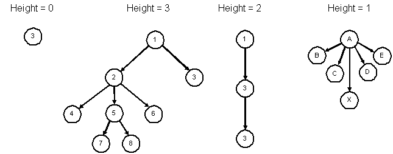This is not a tree. (Y has 2 parents)
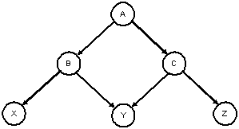
Binary Trees
A binary tree is a collection of nodes such that:
Representing binary trees with diagrams: sometimes an empty box is used to indicate an empty child (empty subtree). The squares are external nodes (leaves) and the circles are internal nodes. These diagrams are referred to as extended binary trees:
| A binary tree | An extended binary tree |
|---|---|

|

|
A balanced binary tree (height-balanced) is a tree where for each node the depth of the left and right subtrees differ by no more than 1.
| A balanced binary tree | An unbalanced binary tree |
|---|---|
| 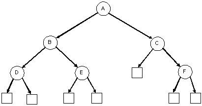 | 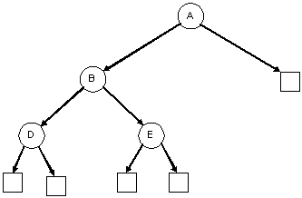 |
| A degenerate binary tree | A balanced binary tree (it's also a complete binary tree) |
|---|---|
| 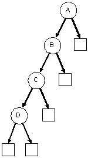 | 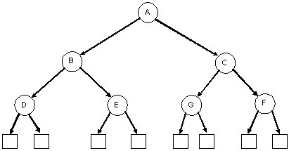 |
A complete binary tree is similar to a balanced binary tree except that all of the leaves must be placed as far to the left as possible. (The leaves must be "filled-in" from left to right, one level at a time.)
| A complete binary tree | An incomplete binary tree | An incomplete binary tree |
|---|---|---|

|
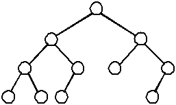 |

|
struct ListNode { ListNode *next; ListNode *prev; Data *data; };struct TreeNode { TreeNode *left; TreeNode *right; Data *data; };
Tree: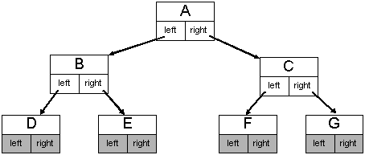
Linked list:

Traversing Binary Trees
Because trees are a recursive data structure, recursive algorithms are quite appropriate. In some cases, iterative (non-recursive) algorithms can be significantly more complicated.
| Recursive algorithm | Recursive algorithm with base case | |
|---|---|---|
|
|
Given these binary trees:
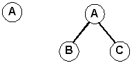assume that visiting a node means printing the letter of the node. The result of the traversing the first tree is A in all 3 cases.
For the second tree, we have:
| 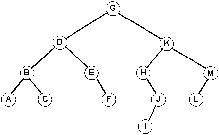 |
| Modula-2 ©2008 |
Assuming that visiting a node means printing the letter of the node, what is the output for
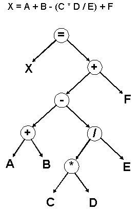What kind of traversal would we use to evaluate the expression tree?
Implementing Tree Algorithms
Assume we have these definitions:struct Node
{
Node *left;
Node *right;
int data;
};
Node *MakeNode(int Data)
{
Node *node = new Node;
node->data = Data;
node->left = 0;
node->right = 0;
return node;
}
void FreeNode(Node *node)
{
delete node;
}
typedef Node* Tree;
int Count = 0;
Tree BuildRandBinTreePre(int height)
{
if (height == -1)
return 0;
Node *node = MakeNode('A' + Count++); // build the node
node->left = BuildRandBinTreePre(height - 1); // build the left tree
node->right = BuildRandBinTreePre(height - 1); // build the right tree
return node;
}
void main()
{
Tree t = BuildRandBinTreePre(1);
}
which order has this tree been built? Why? How would we construct these trees:A / \ B C
B C / \ / \ A C A B
Tree BuildRandBinTreeIn(int height)
{
if (height == -1)
return 0;
Node *node = new Node;
node->left = BuildRandBinTreeIn(height - 1); // build left subtree
node->data = 'A' + Count++; // build node
node->right = BuildRandBinTreeIn(height - 1); // build right subtree
return node;
}
Tree BuildRandBinTreePost(int height)
{
if (height == -1)
return 0;
Node *node = new Node;
node->left = BuildRandBinTreePost(height - 1); // build left subtree
node->right = BuildRandBinTreePost(height - 1); // build right subtree
node->data = 'A' + Count++; // build node
return node;
}
Self-check: Suppose you used these functions to create a tree with height of 2. This would require 7 nodes and use the letters: ABCDEFG. What would the trees look like using: BuildRandBinTreePre? BuildRandBinTreeIn? BuildRandBinTreePost?
More Tree Algorithms
State the recursive algorithms for finding:
Definitions and sample implementations:
0 if the tree is empty 1 + if tree is not empty nodes in left subtree + nodes in right subtree
int NodeCount(Tree tree)
{
if (tree == 0)
return 0;
else
return 1 + NodeCount(tree->left) + NodeCount(tree->right);
}
Implementation #1: (naive, from the definition)-1 if the tree is empty (Definition from our book) 1 + height of left subtree if height of left subtree > height of right subtree 1 + height of right subtree otherwise
int Height(Tree tree)
{
if (tree == 0)
return -1;
if (Height(tree->left) > Height(tree->right))
return Height(tree->left) + 1;
else
return Height(tree->right) + 1;
}
int Height(Tree tree)
{
if (tree == 0)
return -1;
int lh = Height(tree->left);
int rh = Height(tree->right);
if (lh > rh)
return lh + 1;
else
return rh + 1;
}
int Height(Tree tree)
{
if (tree == 0)
return -1;
else
return (1 + Max(Height(tree->left), Height(tree->right)));
}
Assume that "visting" a node simply means printing out the value of the data element:
void VisitNode(Tree tree)
{
cout << tree->data << endl;
}
void TraversePreOrder(Tree tree)
{
if (tree == 0)
return;
else
{
VisitNode(tree);
TraversePreOrder(tree->left);
TraversePreOrder(tree->right);
}
}
void TraverseInOrder(Tree tree)
{
if (tree == 0)
return;
else
{
TraverseInOrder(tree->left);
VisitNode(tree);
TraverseInOrder(tree->right);
}
}
void TraversePostOrder(Tree tree)
{
if (tree == 0)
return;
else
{
TraversePostOrder(tree->left);
TraversePostOrder(tree->right);
VisitNode(tree);
}
}Level-Order Traversal
Traversing all nodes on level 0, from left to right, then all nodes on level 1 (left to right), then nodes on level 2 (left to right), etc. is level-order traversal.So, a level-order traversal of this tree:
| Modula-2 ©2008 |
will result in the nodes being visited in this order:
G D K B E H M A C F J L I
Traversing in level-order really isn't any more complicated by definition:
The recursive definition:
If the level being visited is: 0 Visit the node
If the level being visited is: > 0 Traverse the left subtree
Traverse the right subtree
1. void TraverseLevelOrder(Tree tree)
2. {
3. int height = Height(tree);
4. for (int i = 0; i <= height; i++)
5. TraverseLevelOrder2(tree, i);
6. }
7. void TraverseLevelOrder2(Tree tree, int level)
8. {
9. if (level == 0)
10. VisitNode(tree);
11. else
12. {
13. TraverseLevelOrder2(tree->left, level - 1);
14. TraverseLevelOrder2(tree->right, level - 1);
15. }
16. }Details of the TraverseLevelOrder2 function above:
Level Nodes at level N Nodes in tree Node Accesses
------------------------------------------------------------
0 1 1 1
1 2 3 4
2 4 7 11
3 8 15 26
4 16 31 57
5 32 63 120
6 64 127 247
7 128 255 502
8 256 511 1013
9 512 1023 2036
10 1024 2047 4083
11 2048 4095 8178
12 4096 8191 16369
13 8192 16383 32752
14 16384 32767 65519
15 32768 65535 131054
16 65536 131071 262125
17 131072 262143 524268
18 262144 524287 1048555
19 524288 1048575 2097130
Self Check: Modify the algorithm above so it prints the nodes in reverse level-order: I L J F C A M H E B K D
| Pseudocode | ||
|---|---|---|
|
What is the complexity for this level-order traversal?
Self Check: Implement a function similar to TraverseLevelOrder that uses a queue as an auxiliary data structure. The function won't be recursive. (What happens if you replace the queue with a stack?)
Binary Search Trees
DefinitionA binary search tree (BST) is a binary tree in which the values in the left subtree of a node are all less than the value in the node, and the values in the right subtree of a node are all greater than the value of the node. The subtrees of a binary search tree must themselves be binary search trees.Note that under this definition, a BST never contains duplicate nodes.
Some operations for BSTs:
|
|
|
As always
Sample code for finding an item in a BST:
|
Sample code for inserting an item into a BST:
void InsertItem(Tree &tree, int Data)
{
if (tree == 0)
tree = MakeNode(Data);
else if (Data < tree->data)
InsertItem(tree->left, Data);
else if (Data > tree->data)
InsertItem(tree->right, Data);
else
cout << "Error, duplicate item" << endl;
}
What is the height of the resulting tree? What can you say about the tree? (Is it balanced? Is it complete?)
2. Suppose we have the same data but in a different order: 2, 4, 6, 10, 8, 22, 12, 9, 19, 20
What is the height of the resulting tree? What can you say about the tree? (Is it balanced? Is it complete?)
Diagrams of the results.
Deleting A Node
The caveat of deleting a node is that, after deletion, the tree must still be a BST. Using this tree as an example:| Modula-2 ©2008 |
This is trivial. Set the parent's pointer to this node to NULL.
Replace the deleted node with its right child. Note that this case can be combined with Case #1 by "promoting" the right child. This works even if the right child is NULL.
Similar to #2. Promote the left child.
| Modula-2 ©2008 |
|
|
Rotating Nodes
Note an important property of rotation: after the rotation, the sort order is preserved. This is important, because the resulting tree must still be a BST.
Rotate right about the root, S. (Same as promoting the left child, M)

Rotate left twice about the root. (Far right diagram) First rotate about 1, then rotate about 3. (Same as promoting 3 and then promoting 6)

Using the defintions above. Note the parameter to each function is a reference to a pointer.
Follow the four lines of code in this example. We are rotating right about S (promoting M).
Rotating a tree right Rotating a tree left void RotateRight(Tree &tree) { Tree temp = tree; tree = tree->left; temp->left = tree->right; tree->right = temp; }void RotateLeft(Tree &tree) { Tree temp = tree; tree = tree->right; temp->right = tree->left; tree->left = temp; }
1. temp = Tree; // temp ===> S 2. tree = temp->left; // tree ===> M 3. temp->left = tree->right; // temp->left ===> P 4. tree->right = temp; // tree->right ===> S
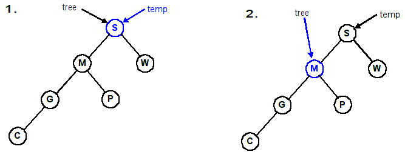
Adjusting the diagram:
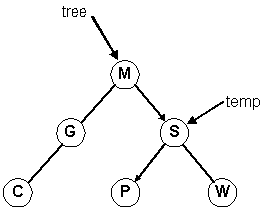
Note that these four trees below all contain the same data.You can easily see why we passed a reference (or pointer) to the root of the tree. If you just pass the pointer itself (by value), after the rotation tree still points at node S, which is wrong. Keep this in mind when you are implementing the tree functions.
| One | Two | Three | Four |
|---|---|---|---|
| 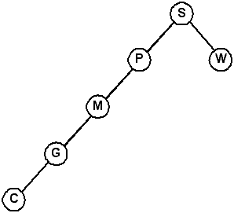 | 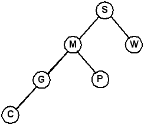 |

|

|
Can you explain why there are four different representations for the same data?
BST/AVL program showing balance factors and node counts.
Splay Trees
Invented by D.D. Sleator and R.E. Tarjan in 1985.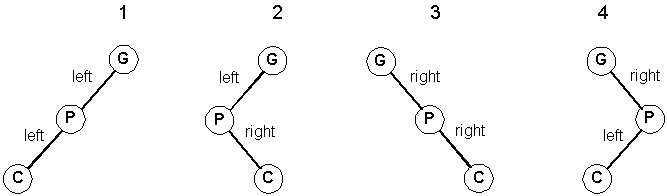
Left-Left orientation (zig-zig)
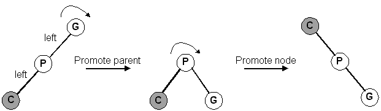
Left-Right orientation (zig-zag)
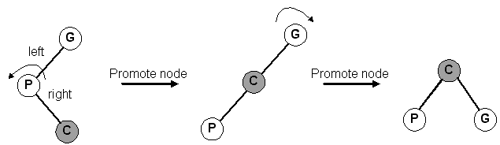
Right-Right orientation (zig-zig)

Right-Left orientation (zig-zag)

Our orientation with our grandparent is left-right at first:
Now, our orientation with our grandparent is left-left:
The result of splaying F to the root:
Additional Notes: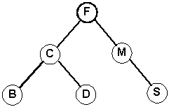
Given this expression:
The result after evaluation is 56. The tree that represents it looks like this:(7 + 5) * (3 + 4) - (4 * (9 - 2))
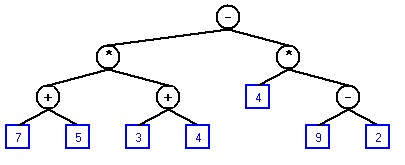
Evaluating the tree gives the same result. Evaluating an expression tree simply means reducing each subtree by post-order traversal. Why post-order?
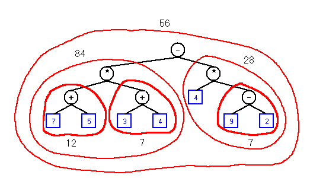
<expression> ::= <term> { <addop> <term> }
<term> ::= <factor> { <mulop> <factor> }
<factor> ::= ( <expression> ) | <identifier> | <literal>
<addop> ::= + | -
<mulop> ::= * | /
<identifier> ::= a | b | c | ... | z | A | B | C | ... | Z
<literal> ::= 0 | 1 | 2 | ... | 9
Our "language" consists of the following tokens:
Examples:Valid tokens: ()+-*/abcdefghijklmnopqrstuvwxyzABCDEFGHIJKLMNOPQRSTUVWXYZ0123456789
Valid expressions: A, B, 1, A + 2, A + B, A * (B), A * (B - 2), (1) Invalid constructs: AB, 3A, 123, A(3), A + (), A * -3
Given any infix valid expression within the language, we can evaluate or reduce the expression in a two-step process:
<expression> ::= <term> { <addop> <term> }
<term> ::= <factor> { <mulop> <factor> }
<factor> ::= ( <expression> ) | <identifier> | <literal>
MakeExpression(Tree)
1 Make a term, setting Tree to point to it
2 while the next token is '+' or '-'
3 Make an operator node, setting left child to Tree and right to NULL. (Tree points to new node)
4 Get the next token.
5 Make a term, setting the right child of Tree to point to it.
6 end while
End MakeExpression
MakeTerm(Tree)
7 Make a factor, setting Tree to point to it
8 while the next token is '*' or '/'
9 Make an operator node, setting left child to Tree and right to NULL. (Tree points to new node)
10 Get the next token.
11 Make a factor, setting the right child of Tree to point to it.
12 end while
End MakeTerm
MakeFactor(Tree)
13 if current token is '(', then
14 Get the next token
15 Make an expression, setting Tree to point to it
16 else if current token is an IDENTIFIER
17 Make an identifier node, set Tree to point to it, set left/right children to NULL.
18 else if current token is a LITERAL
19 Make a literal node, set Tree to point to it, set left/right children to NULL.
20 end if
21 Get the next token
End MakeFactor
GetNextToken
while whitespace
Increment CurrentPosition
end while
CurrentToken = Expression[CurrentPosition]
Increment CurrentPosition
End GetNextToken
<expression> ::= <term> { <addop> <term> }
<term> ::= <factor> { <mulop> <factor> }
<factor> ::= ( <expression> ) | <identifier> | <literal>
Diagrams for the expression: A + B (All addresses are arbitrary, but represent the order the nodes were created.)
A A + A + B 

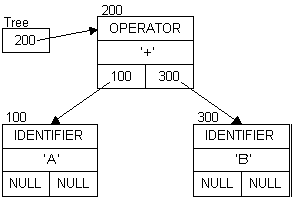
Extending the expression to: A + B - 5
A + B - A + B - 5 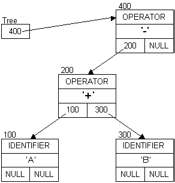 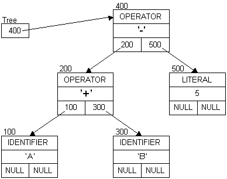
Diagrams for the expression: A + B * 5
A + B as before:
Adding: * 5
A + B * A + B * 5 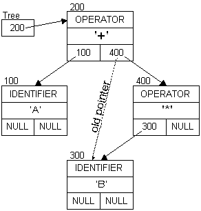 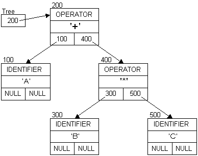
Some simplification examples:
4 * (2 + 3) → 20 A * (2 + 3) → A * 5 A * (3 - 4 + 1) + B → B A + 2 * 3 → A + 6
Simplification Rules:
| Condition | Action |
|---|---|
| Both children are LITERAL | Evaluate the expression and promote the result to the node that contained the operator. 0 / 0 → (exception) |
| The left child is a LITERAL and the right child is an IDENTIFIER or OPERATOR (expression). |
If expression is one of these forms, it can be simplified and the result promoted:
0 + E → E 1 * E → E 0 * E → 0 0 / E → 0 |
| The right child is a LITERAL and the left child is an IDENTIFIER or OPERATOR (expression). |
If expression is one of these forms, it can be simplified and the result promoted:
E + 0 → E E - 0 → E E * 0 → 0 E * 1 → E E / 1 → E E / 0 → (exception) |
| Both children are IDENTIFIER. |
If expression is one of these forms, it can be simplified and the result promoted:
I - I → 0 I / I → 1 |
Example of the form: E - 0 → E
Self-check Build the parse tree for these expressions:
A + B + C A + B * C A * B + C (A + B) * C A * (B + C) |
This is how compilers do constant folding.
Given this code (from the link above):
int main()
{
int a = 30;
int b = 9 - (a / 5);
int c;
c = b * 4;
if (c > 10)
{
c = c - 10;
}
return c * (60 / a);
}
No optimization Optimization -O